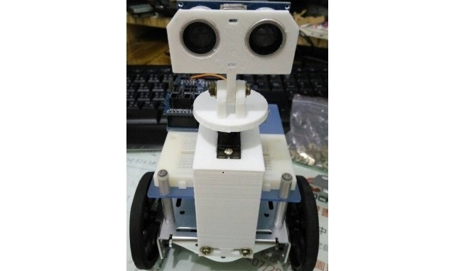

尋找大自然的密碼
本專題引導學生觀察碎形圖形的產生規則，學習尋找圖形樣式。專題重點為重複結構與函式的學習。活動中透過重複樣式的辨識與碎形圖形的建構，讓學生體驗分解問題、樣式辨識、模組化與抽象化等運算思維歷程，處理複雜而龐大的任務。
Scratch 國中 八年級
寶可夢大師之路
本專題透過 Pokémon Go 遊戲中常見的問題，引導學生尋找最佳路徑，在此過程中建立將問題抽象化的思維，歸納可能的路徑樣式，最後發展出能夠處理尋找路徑的演算法思維。
Scratch 國中 七年級


避障車
在此專題中，學生將學會拆解的程序。從最終目標智慧避障車往前推，讓學生學會將大任務拆解成一項一項的子功能。整個專題主要是讓學生體會到運算思維中拆解的重要性。把每件小事做好，有意義地組合起來就可以完成一件大事。
arduino 國中 七年級掃地機器人
市面上的掃地機器人提供各種清掃模式，不同的清掃模式提供不同的移動方式。此專題透過分析掃地機器人的組成與移動模式，針對不同的移動模式找出其邏輯與規則，先以軟體模擬其可行性後，最後用開放硬體實作掃地機器人。
arduino 國中 八年級